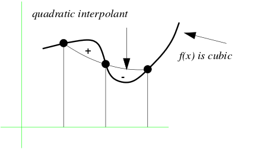
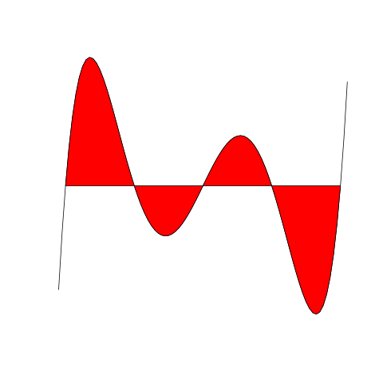

Quadrature means numerical integration. We have aleady learned
two quadrature techniques: trapezium rule and Simpson's rule. We
have also mentioned that both of these are special cases of
Newton-Cotes quadrature. Here we shall learn about Newton-Cotes
quadrature in general.
Newton-Cotes quadrature of
order $n$ to
approximate $\int_a^b f(x)\, dx$ starts with a
regularly spaced grid
$$
a = x_0,~~x_1,~~...,x_n = b,
$$
where
$$
x_i = a + i\times\frac{b-a}{n}.
$$
Then it interpolates the $n+1$
points $\big(x_i,f(x_i)\big)$ with a polynomial, $p_n(x),$
of degree $\leq n.$ Then it approximates $\int_a^b f(x)\,
dx$ with $\int_a^b p_n(x)\, dx.$
To be precise, this is called simple Newton-Cotes quadrature.
There is a more popular version called composite
Newton-Cotes quadrature. Here we first split $[a,b]$ into a
number of equal subintervals, and apply simple Newton-Cotes
quadrature to each subinterval spearately. In particular, the 1-st
order composite Newton-Cotes quadrature is the same as trapezium
rule, and the 2-nd order composite Newton-Cotes quadrature is the
same as Simpson's rule.
In practice there is a short cut method for finding the
(simple) Newton-Cotes quadrature formula for any given $n,$
that does not require any interpolation. It is based on the
following two observations.
The proof of this is obvious. The second observation is:
EXERCISE:
Show that this is true by observing that $f[x_0,...,x_k]$'s are
linear combinations of $f(x_i)$'s.
Once we know that $\alpha_i$'s are free of $f,$ we can take special
simple polynomials of $f$ to compute them. For instance, to derive
the 1-st order Newton-Cotes formula we shall take
$f(x)=1$ and $f(x)=x.$ The first choice will give:
$$
b-a = \alpha_0 + \alpha_1,
$$
while the second choice gives
$$
(b^2-a^2)/2 = \alpha_0 a + \alpha_1 b
$$
Solving these two equations we get
$$
\alpha_0 = \alpha_1 = \frac{b-a}{2}=\frac h2,
$$
where $h$ is the common difference between
the $x_i$'s.
This gives the trapezium rule (for a single trapezium).
Similarly, we can take $f(x)=1,x$ and $x^2$ for Simpson's rule
to get 3 equations:
$$\begin{eqnarray*}
\alpha_0+\alpha_1+\alpha_2 & = & b-a\\
x_0\alpha_0+x_1\alpha_1+x_2\alpha_2 & = & (b^2-a^2)/2\\
x_0^2\alpha_0+x_1^2\alpha_1+x_2^2\alpha_2 & = & (b^3-a^3)/3
\end{eqnarray*}$$
Notice that this system can be written as
$$
\left[\begin{array}{ccccccccccc}1& 1& 1\\x_0& x_1& x_2\\x_0^2& x_1^2& x_2^2
\end{array}\right]
\left[\begin{array}{ccccccccccc}\alpha_0\\\alpha_1\\\alpha_2
\end{array}\right] =
\left[\begin{array}{ccccccccccc}(b-a)\\(b^2-a^2)/2\\(b^3-a^3)/3
\end{array}\right].
$$
The coefficient matrix is a Vandermonde matrix, and hence is
nonsingular. It should not be difficult to check that the unique solution
is given by
$$
\alpha_0 = h/3,~~~\alpha_1 = 4h/3,~~~\alpha_2 = h/3,
$$
where $h$ is again the common difference between the $x_i$'s.
Passing from simple to composite Newton-Cotes quadrature formulae
is simple. If the coefficients are $\alpha_0,...,\alpha_n,$
and we are using $3$ subintervals, then the coefficients
will be
$$
\alpha_0, \alpha_1,...,\alpha_{n-1},\fbox{$\alpha_n+\alpha_0$},\alpha_1,...,\alpha_{n-1},\fbox{$\alpha_n+\alpha_0$},\alpha_1,...,\alpha_{n-1},\alpha_n.
$$
Note the boxed terms, where two consecutive subintervals meet.
By construction the Newton-Cotes formula of degree $n$ is exact (i.e., involves no error) if
$f(x)$ is a polynomial of degree $\leq n.$ In particular, the
trapezium rule is exact if $f(x)$ is linear. However, it may not be
exact for higher degree polynomials.
EXAMPLE:
Let us apply the trapezium rule to $f(x) = x^2$ for $x_0 = 0$
and $x_1 = 1.$ The actual integral is
$$
\int_0^1 x^2 dx = \frac13.
$$
Using trapezium rule we get
$$
\frac12(0+1) = \frac12 \neq \frac13.
$$
However, something different happens for Simpson's rule. Since it is
the Newton-Cotes formula for $n=2,$ it is exact for polynomials of
degree $\leq 2.$ However, it turns out that it is also exact for
polynomials of degree 3.
EXAMPLE:
Let us apply Simpson's rule to $f(x) = x^3$ for general
$a,b.$
The actual answer is
$$
\int_a^b x^3 dx = \frac{(b^4-a^4)}{4}.
$$
To apply Simpson's rule we notice that $x_0=a,x_1=(a+b)/2,x_2=b$ and
$h=(b-a)/2.$ So Simpson's rule gives
$$
\frac{h}{3}(x_0^3 + 4x_1^3 + x_2^3),
$$
which is same as the exact integral (check!)
The reason behind the exactness of Simpson's rule for cubic polynomials
is shown in the diagram below.

Why Simpson's rule works for cubic
polynomials
The two areas marked $+$ and $-$ are equal, and hence cancel
each other out.
This is actually a general phenomenon for Newton-Cotes formulae for
even $n.$ They are exact if $f(x)$ is a polynomial of
degree $\leq n+1. $ However, if $n$ is odd then it is guaranteed
to be exact only if $f(x)$ is a polynomial of
degree $\leq n.$ To prove this let $f(x)$ be a polynomial of
degree $n+1.$ Then, by Newton's fundamental formula
(see the interpolation (part 1)
page), we have
$$
f(x) = p_n(x) + R_n(x),
$$
where $p_n(x)$ is the $\leq n$-th degree interpolating
polynomial and $R_n(x)$ is the remainder term, which is of
the form
$$
R_n(x) = f[x,x_0,...x_n](x-x_0)\cdots(x-x_n).
$$
By a standard property of
Newton's divided differences, we know
$$
f[x,x_0,...,x_n] = \frac{f^{(n+1)}(\xi)}{(n+1)!}
$$
for some $\xi\in(a,b)$, where $a =
\min\{x,x_0,...,x_n\}$ and $b = \max\{x,x_0,...,x_n\}.$
Now, $f(x)$ being a $(n+1)$ degree polynomial, this
implies that $f[x,x_0,...,x_n]$ is just the leading
coefficient of $f(x).$
If we use $n$-point Newton-Cotes formula, we are integrating
only the
$p_n(x)$ part, which produces exact result. So enough to show
that $\int_{x_0}^{x_n} R_n(x)\, dx = 0.$
For this it is again enough to show that
$$
\int_{x_0}^{x_n} (x-x_0)\cdots(x-x_n)dx = 0.
$$
Since the $x_i$'s are regularly spaced, the polynomial
$$
(x-x_0)\cdots(x-x_n)
$$
has a graph like the following.

The shaded areas cancel out for even $n$
For even $n$ there are exactly $n/2$ humps above and below
the $x$-axis. So by symmetry (care!) the sum of the (signed)
areas is zero.
Hence the result.
Gauss used the above idea to extend Newton-Cotes quadrature to
what has come to be known as Gaussian quadrature.
To start the discussion, first notice that the main idea behind
Newton-Cotes quadrature works even if $x_0,...,x_n$ are not
regularly spaced. All that we need is that they are distinct
numbers in $[a,b].$ Then we can obtain the unique
interpolating polynomial of degree $\leq n,$ and use its
integral as an approximation to $\int_a^b f(x)\,dx.$ The
result will be of the form
$$
c_0f(x_0)+\cdots+ c_n f(x_n),
$$
for some constants $c_0,...,c_n$ depending only on
the $x_i$'s. These $c_i$'s may be obtained by the
Vandermonde system discussed above for Newton-Cotes quadrature.
In this note, we shall call this method (i.e., Newton-Cotes
quadrature with possibly unevenly spaced $x_i$'s) the generalised
Newton-Cotes quadrature, and denote it by $GNC(x_0,...,x_n).$
By the
very construction this method gives exact answer if $f$ is
itself a polynomial of degree $\leq n.$ A natural question
is: can we choose the $x_i$'s cleverly, so that $GNC(x_0,...,x_n)$
is accurate for polynomials up to some higher degree? Gauss showed
that the answer is: Yes, it is possible to
choose $x_0,...,x_n$ in $[a,b]$ in a way so that the
corresponding Newton-Cotes quadrature gives exact answer for all
polynomials of degree $\leq 2n+1.$ This upper bound on the
degree is natural since we are now choosing $2n+2$
quantities (the $x_i$'s and the $c_i$'s), and a general
polynomial of degree $\leq 2n+1$ needs $2n+2$ numbers
to specify it.
In general, the error for $GNC(x_0,...,x_n)$
is
$$
\int_a^b R_n(x)\,dx,
$$
where $R_n(x)$ is the error when we use the interpolating
polynomial $p_n(x)$ in place of $f(x)$:
$$
R_n(x) = f(x)-p_n(x).
$$
Our experience with the even $n$ case of Newton-Cotes
quadrature showed that $\int_a^b R_n(x)\, dx$ may
be $0,$ even when $R_n(x)$ is a nonzero function. This
led Gauss to explore the possibility of
choosing $x_0,...,x_n$ in some special way so that
the $\int_a^b R_n(x)\, dx$ vanishes for polynomials of
higher degrees. We know that $R_n(x)$ has the form
$$
R_n(x) = f[x,x_0,...,x_n](x-x_0)(x-x_1)\cdots(x-x_n).
$$
The following fact will come to our help here.
EXERCISE:
Show that if $f(x)$ some polynomial of degree $m>n$,
then $f[x,x_0,...,x_n]$ must be a polynomial of degree $m-n.$
This motivated Gauss to look for $x_0,...,x_n\in[a,b]$ such that
$$
\int_a^b p(x)(x-x_0)\cdots(x-x_n)\, dx = 0
$$
for all polynomials $p(x)$ of degree $\leq n.$
This immediately leads to the following theorem.
Proof:The above discussion.[QED]
This theorem is a useful one, but still it does not tell us if
such $x_0,...,x_n$ indeed exist, and even if they do, how to
find them. For this purpose we need the concept of orthogonal
polynomials, a concept that has far-reaching consequences in
mathematics.
Consider the set of all polynomials $f(x)$ defined on
$[a,b].$
Clearly, it is a vector space over ${\mathbb R}$ under usual addition and
scalar multiplication. Define the inner product
$$
\langle f,g \rangle = \int_a^b f(x)g(x) dx.
$$
Then (**) says that $p(x)$ is orthogonal to all
polynomials of degree $\leq m-1.$ In other words, if $q(x)$ is
any polynomial with degree $\leq m-1,$ then
$$
\langle p,q \rangle = 0.
$$
Now, we can apply Gram-Schmidt orthogonalization to the basis
$$
\{1,x,x^2,x^3,...\}
$$
w.r.t. the above inner product to get an orthogonal basis:
$$
\{p_0(x),p_1(x),p_2(x),...\}
$$
It is easy to see that each $p_k(x)$ has degree $k.$
EXAMPLE:
Let us explicitly compute $p_0(x),p_1(x)$ and $p_2(x)$
using $a=-1$ and $b=1.$
Notice that we care only about the roots of the polynomials, so we shall
save ourselves the trouble of normalizing the polynomials.
We start with
the usual basis $$
u_0(x) = 1,~~~u_1(x)=x,~~~u_2(x)=x^2,\ldots.
$$
We take
$$p_0(x) = u_0(x) = 1.$$
Taking out the $p_0$-component from $u_1$ we are left with
$$
p_1 = u_1 - \frac{\ip{u_1,p_0}}{\ip{p_0,p_0}} p_0 = u_1 = x,
$$
since
$$
\ip{u_1,p_0} = \int_{-1}^1 x dx = 0.
$$
To find $p_2$ we similarly take out the $p_0$ and
$p_1$-components from $u_2$ to get
$$
p_2 = u_2 -
\frac{\ip{u_2,p_0}}{\ip{p_0,p_0}} p_0 -
\frac{\ip{u_2,p_1}}{\ip{p_1,p_1}} p_1.
$$
After some computation this turns out to be
$$
p_2(x) = x^2-\frac13.
$$
EXERCISE:
Check that $p_3(x) = x^3-3x/5$ and $p_4(x) = x^4-6x^2/7 + 3/35.$
pm=:+//. @ (*/)
ip=: (p.&1-p.&_1) @ (0&p.. @ pm )
comp=: [ * ip % (ip~@[)
sb=:-/@,:
ad=:+/@,:
u0=: ,1
u1=: 0 1
u2=: 0 0 1
]p0=: u0
]p1=: (] sb p0&comp) u1
]p2=: (] sb p0&comp ad p1&comp) u2
p. p0
p. p1
p. p2
There is still a little catch here: we need $x_i$'s to be
real, distinct and all lying inside $[a,b].$
This is guaranteed by the following theorem.
Proof:We are given the fact that for any polynomial $q(x)$ of
degree $<n$, we must have $\int_a^b q(x)p_n(x)\,dx = 0.$
Let $p_n(x)$ have exactly $m$ distinct real zeros of odd
multiplicities inside $(a,b).$
Call them $\alpha_1,...,\alpha_m.$
Define a polynomial $q(x)$ as
$$
q(x) = (x-\alpha_1)\cdots(x-\alpha_m).
$$
Then $q(x)p(x)$ has all real zeros of even multiplicities,
and hence does not change sign over $(a,b).$
So $\int_a^b q(x)p_n(x)\,dx \neq 0.$
By the constuction of $p_n(x)$ this forces $q(x)$ to
have degree $\geq n.$ But $m\leq n,$ and hence $m = n.$
So $p(x)$ has exactly $n$ distinct roots (with odd
multiplicities). Since $p_n(x)$ has degree $n,$ all the
zeroes are real and distinct and inside $(a,b).$
[QED]
Let $z_{k,0},...,z_{k,k-1}$ be the zeros of $p_k(x).$ Then
Gaussian quadrature with $n+1$ points uses the following approximation:
$$
\int_a^b f(x) dx \approx \sum_{i=0}^n \alpha_{n+1,i} f(z_{n+1,i}),
$$
where the $\alpha_{n+1,i}$'s are obtained from the Vandermonde system
with $x_i = z_{n+1,i}.$
This is exact if $f(x)$ is a polynomial of degree $\leq 2n.$
EXAMPLE:
People have computed the zeros of $p_n(x)$'s and the corresponding
$c_i$'s to be used in $GNC$, and have published the values as tables. Here are the values
for $n=5.$
In fact, Gaussian quadrature is even more ambitious. It tries to choose
$\alpha_i$'s and $x_i$'s in a way that the formula is exact for
functions of the form
$$
f(x) = w(x) p(x),
$$
where $w(x)$ is some given positive function (called the weight
function) and $p(x)$ is a polynomial of some suitable degree. The
optimal choice of $\alpha_i$'s and $x_i$'s will depend on the
particular weight function used. Depending on the choice of the weight
function we have different forms of Gaussian quadrature, e.g.,
Gauss-Legendre, Gauss-Laguerre etc. So far we have been working with the
weight function $w(x)\equiv 1.$ If we further choose (without loss of
generality) $a=-1$ and $b=1$ then the resulting orthogonal
polynomials are called Legendre polynomials, and the corresponding Gaussian
quadrature formula is called Gauss-Legendre formula.
We can choose $w(x),a$ and $b$ to suit particular needs. The
choice can be quite general (including $a=-\infty$ and/or
$b=\infty.$) The only restrictions are:
$w(x) >0~~~\forall x\in (a,b)$ (In fact, we can allow
$w(x)$ to be zero at finitely many points.)
The integral
$$
c_k := \int_a^b w(x) x^k dx
$$
must be finite for all $k.$
These two conditions guarantee that we can define the inner product
$$
\langle f,g \rangle = \int_a^b w(x) f(x)g(x) dx.
$$
As before we can apply Gram-Schmidt orthogonalization to the basis
$$
\{1,x,x^2,x^3,...\}
$$
w.r.t. the above inner product to get an orthogonal basis:
$$
\{p_0(x),p_1(x),p_2(x),...\}
$$
It is easy to see that each $p_k(x)$ has degree $k.$
The following theorem is a generalization of the last theorem.
Proof:We shall not prove this in this course.[QED]
Once we choose $w(x), a$ and $b,$ we have the corresponding
Gaussian quadrature formula:
$$
\int_a^b w(x) f(x) dx \approx \sum_{i=0}^n \alpha_{n+1,i} f(z_{n+1,i}),
$$
where $z_{n+1,0},...,z_{n+1,n}$ are the zeros of $p_{n+1}(x)$ and the
$\alpha_{n+1,i}$'s are obtained from
$$
\left[\begin{array}{ccccccccccc}1& 1& \cdots & 1\\
x_0& x_1& \cdots& x_n\\
x_0^2& x_1^2& \cdots& x_n^2\\
\vdots & \vdots & & \vdots\\
x_0^n& x_1^n& \cdots& x_n^n
\end{array}\right]\left[\begin{array}{ccccccccccc}\alpha_{n+1,0}\\\alpha_{n+1,1}\\\alpha_{n+1,2}\\\vdots\\ \alpha_{n+1,n}
\end{array}\right] =
\left[\begin{array}{ccccccccccc}c_0\\c_1\\c_2\\\cdots\\c_n
\end{array}\right],
$$
where
$$
c_k = \int_a^b x^k w(x) dx.
$$
This formula is exact if $f(x)$ is a polynomial of degree $\leq
2n.$
Certain choices of weights are more popular than others. Here is an
incomplete list.
Name
$w(x)$
$(a,b)$
Gauss-Legendre
$1$
$(-1,1)$
Gauss-Laguerre
$e^{-x}$
$(0,\infty)$
Gauss-Hermite
$e^{-x^2}$
$(-\infty,\infty)$
Gauss-Chebyshev
$1/\sqrt{1-x^2}$
$(-1,1)$
Standard tables are available for $z_{k,i}$'s and
$\alpha_{n,i}$'s for these cases. Here are some of these.
Gauss-Laguerre
$i$
$z_{5,i}$
$\alpha_{5,i}$
$0$
$0.263560319718$
$0.521755610583$
$1$
$1.413403059107$
$0.398666811083$
$2$
$3.596425771041$
$0.759424496817e-1$
$3$
$7.085810005859$
$0.361175867992e-2$
$4$
$12.640800844276$
$0.233699723858e-4$
For Gauss-Chebyshev there are simple closed-form formulae for
$z_{k,i}$'s and $\alpha_{k,i}$'s:
$$
z_{k,i} = \cos\frac{(2i+1)\pi}{2k},~~~\alpha_{k,i} = \frac{\pi}{k}.
$$
Here is the table for Gauss-Hermite.
Gauss-Hermite
$i$
$z_{5,i}$
$\alpha_{5,i}$
$0,1$
$\pm2.0201828705$
$0.0199532421$
$2,3$
$\pm0.9585724646$
$0.3936193232$
$4$
$ 0.0000000000$
$0.9453087205$
Comments
To post an anonymous comment, click on the "Name" field. This
will bring up an option saying "I'd rather post as a guest."